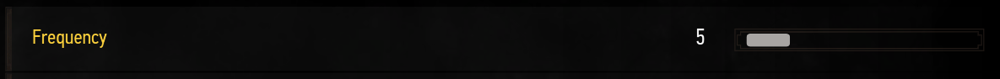
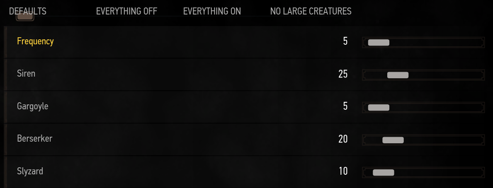

Ambushes
 Ambushes, like any encounter have two menus for them. One for the day and one
for the night. Useful if you want ambushes only during the night and none during the day
Ambushes, like any encounter have two menus for them. One for the day and one
for the night. Useful if you want ambushes only during the night and none during the day
First, you can control with the frequency slider how often you see ambushes.  It is a ratio of all the frequency sliders from all the encounters, so if you set one to 5 and another to 50 it means the one with 50 has 10 times the chance to appear compared to the one with 5.
Then you can control which creatures you see from ambushes.  These are ratios too, you don't have to calculate the exact % but you simply need to know that 100 is ten times more than 10.
Ambushes are simple. When the encounter is spawned, creatures will always go towards Geralt and look for a fight. There is no way to escape them and you have no other choice than to kill them.